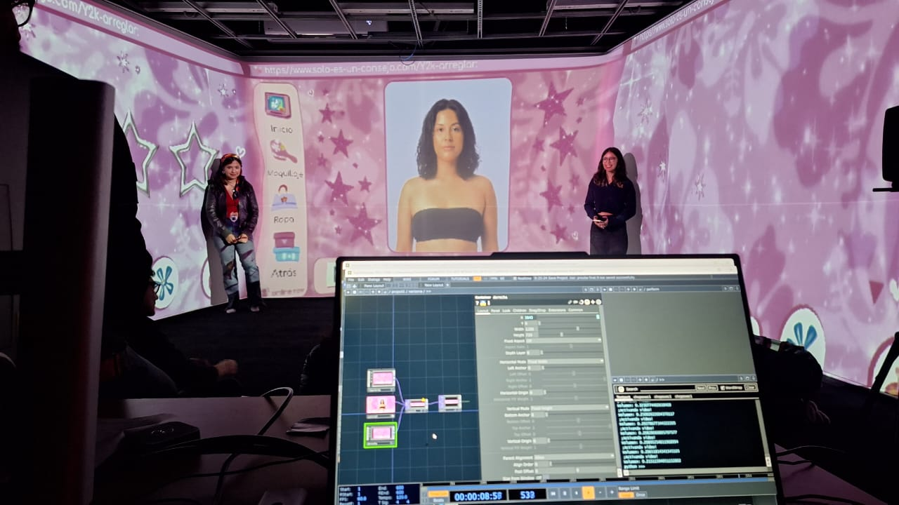

── .✦ “Solo es un consejo” es una instalación interactiva audiovisual donde se expone y critica cómo es que la industria y el internet imponen ideales inalcanzables, viendo al cuerpo de la mujer como un producto visual y desechable, y cómo esto impacta directamente en la autoestima y la construcción de la identidad.
✦ Angelica Trejo
✦ Estefania Hernández
✦ Monserrath Jiménez
Instalación audiovisual interactiva multicanal
La instalación interactiva propone una experiencia inmersiva-interactiva que confronta al espectador con la violencia estética que enfrentan las mujeres en la cultura digital. A través de una dinámica inspirada en el juego del “ahorcado”, lxs participantes deben adivinar palabras denigrantes comúnmente utilizadas para referirse al cuerpo femenino. En el centro de la sala hay un teclado físico que permite ingresar letras, revelando poco a poco la palabra oculta en la pantalla principal, donde también aparece la imagen de una mujer. Una vez descubierta la palabra, lxs participantes deben gritarla, activando así una reacción audiovisual: la pantalla derecha estalla con un collage de comentarios agresivos extraídos de redes sociales, mientras que en la pantalla izquierda emergen titulares de revistas y “tips” que presionan a modificar ese aspecto físico. Finalmente, la figura femenina central reaparece, alterada por los cambios que le fueron impuestos, mostrando señales de daño como moretones y cicatrices. Esta obra busca evidenciar cómo el cuerpo de la mujer es moldeado por las exigencias sociales, exponiendo la crueldad disfrazada de consejo, y la repetición constante de estos discursos que perpetúan la violencia estética.

Instalación audiovisual interactiva multicanal
Solo es un consejo nació como una crítica hacia cómo la sociedad moldea los cuerpos de las mujeres, tratándolos como productos que deben encajar en ideales imposibles. Nos preguntamos cómo estos estereotipos afectan no solo la autoestima, sino también la identidad de muchas mujeres en la cultura digital.
Para construir la pieza, tomamos inspiración estética de los juegos en línea para niñas, de las revistas de moda de los 2000 y del clásico juego del "ahorcado", con el que estructuramos la dinámica principal. También nos basamos en artículos académicos, videos y obras artísticas que analizan la violencia estética y la presión sobre los cuerpos femeninos.
Inicialmente, pensamos en un collage con partes de cuerpos, e incluso contemplamos finales alternativos donde la figura femenina pudiera "morir". Sin embargo, esa idea fue descartada al no sentirse del todo ética ni clara dentro del mensaje que queríamos comunicar.
En lo técnico, el desarrollo comenzó desde el deseo de usar un teclado físico, donde el espectador pudiera participar activamente en el juego. A partir de ahí, exploramos cómo hacer que ciertas interacciones, como teclear una palabra o realizar un gesto como el "pulgar arriba" desencadenan reacciones audiovisuales dentro de la instalación.
Esta obra nos permitió profundizar más en el impacto de la violencia estética: un tipo de agresión poco reconocida, pero muy presente en el entorno digital, nos dimos cuenta de cómo, en redes sociales, la gente se siente cómoda insultando, humillando y haciendo sentir menos a las mujeres solo por su apariencia. Esta violencia disfrazada de “consejo” es la que quisimos visibilizar con nuestra obra.
☆ estefi_h.d ☆ ☆ moonday_18 ☆ ☆ anggg.731 ☆